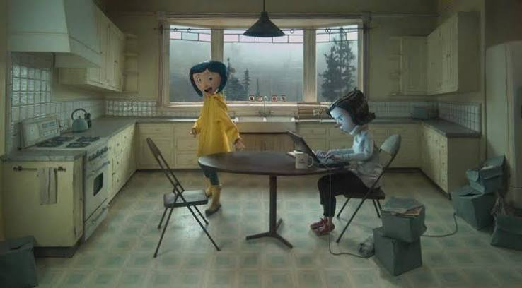
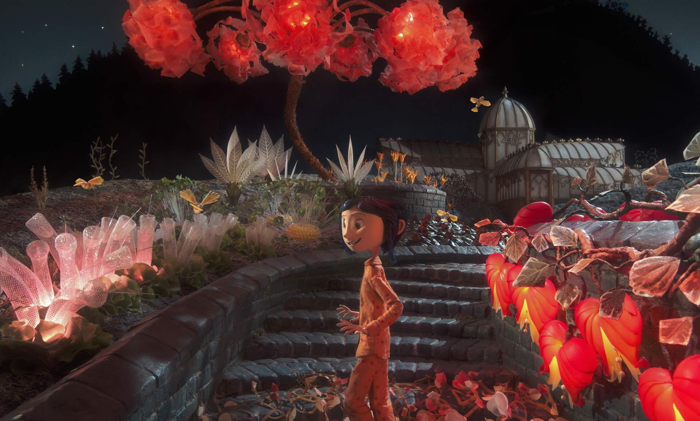
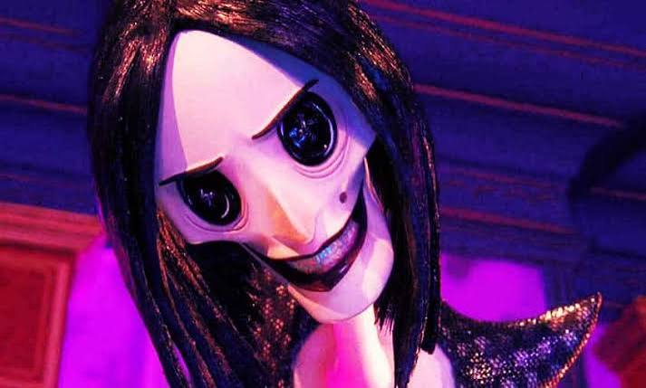
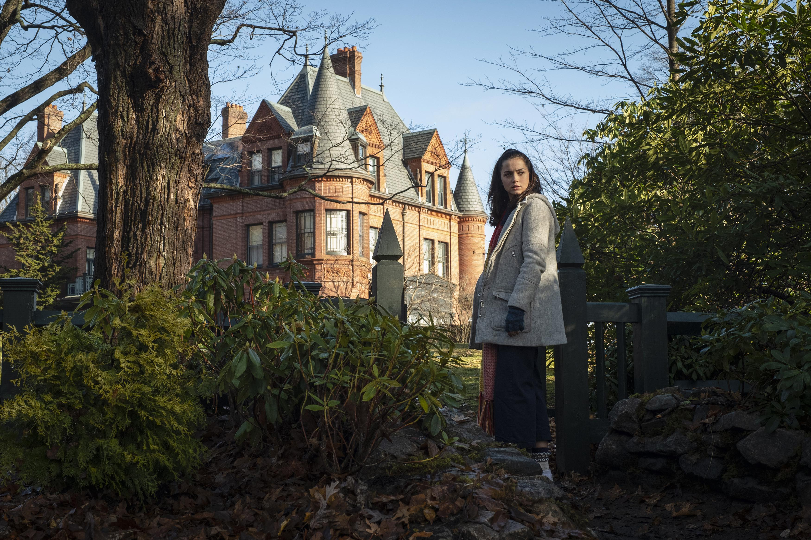
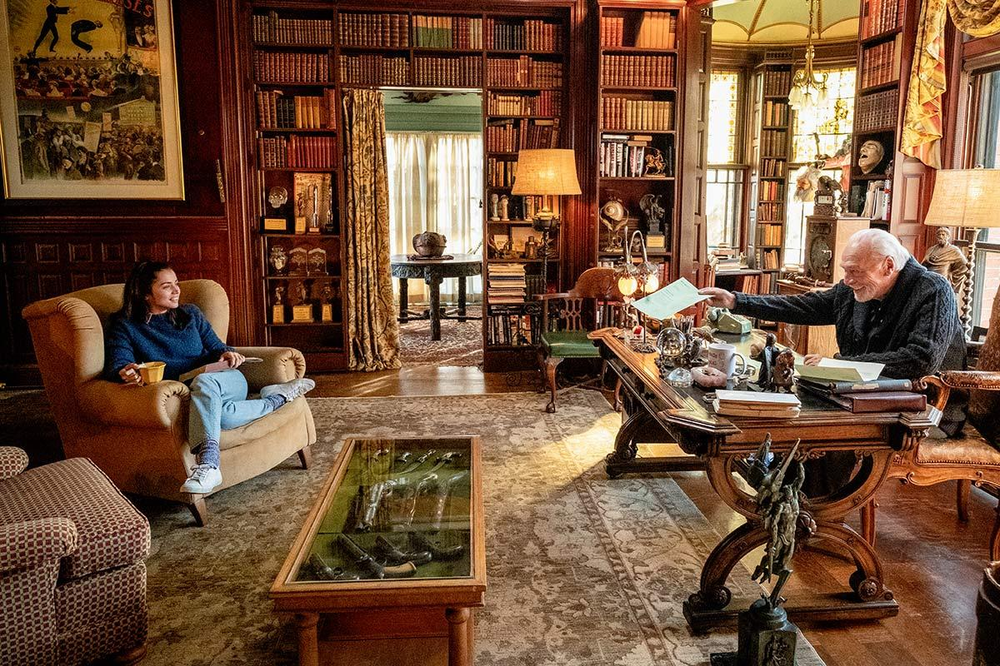
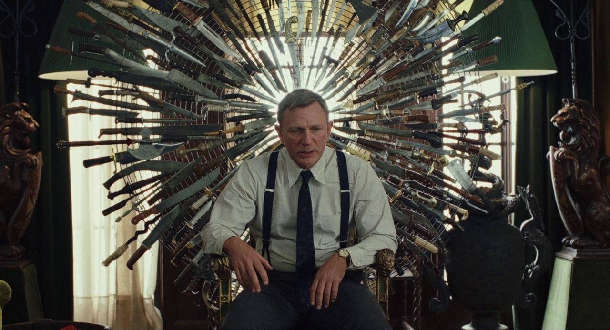
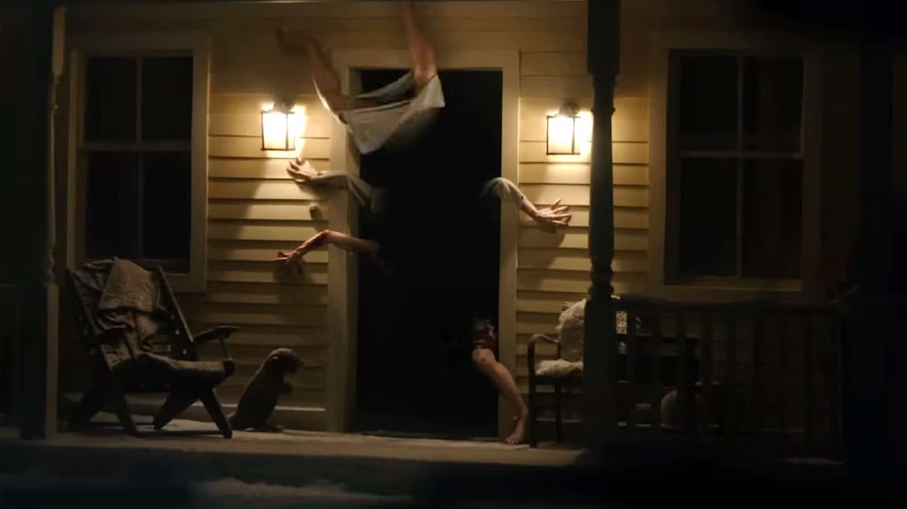

The Art of Movies
Movies are more than just the stories being told. The colors, lighting, camera angles, environments, and animation all help create the experience for the audience. Sometimes the smallest visual details can completely change how a scene feels. These are a few movies that stand out to me because of the way they use visual design to tell their stories.
Coraline (2009)
Coraline is a really good example of how color and lighting can completely change the way a setting feels. At the beginning of the movie, the real world has a much more muted color palette. The lighting is often darker, and the surroundings feel a little dull and uninviting. When Coraline discovers the Other World, everything suddenly becomes brighter, more colorful, and full of life. The contrast makes the Other World seem much more exciting than her actual home.


Color and Atmosphere
What I find interesting is that the Other World doesn't stay visually inviting. As Coraline spends more time there, the bright colors and beautiful surroundings start to feel more uncomfortable. The button eyes, strange character designs, and increasingly unnatural details make the audience realize that something isn't right. The movie uses these visual changes to show that the Other World isn't as perfect as it first appears.

Stop-Motion Animation and Details
Another thing that makes Coraline stand out is its stop-motion animation. Since the characters and environments were physically created, there are so many little details that make the world feel unique. The textures, clothing, facial expressions, and decorations all help make the movie feel different from traditional computer animation. Even small details can make a scene feel more interesting or unsettling.
I think Coraline shows how a movie can use its art style to tell part of the story without having to explain everything through dialogue. The audience can start noticing that something is wrong just by looking at the characters and environments.
Coraline Clip
This clip is a good example of how the movie uses its animation, colors, and environments to create its atmosphere.
Knives Out (2019)
Knives Out uses its setting in a way that makes the environment feel like another part of the mystery. The Thrombey mansion is filled with decorations, furniture, artwork, and personal belongings that tell you something about the family before you even know much about them. The house feels old, crowded, and full of personality. Instead of using a simple background, the movie fills the rooms with details that make the audience want to look around.


Set Design and Environment
The mansion also helps establish the personalities and relationships of the characters. The different rooms and decorations give the house a very specific atmosphere, and the characters almost seem to blend into their surroundings. The environment helps show the family's wealth, history, and complicated relationships without needing someone to explain all of it.

Camera Framing and Composition
Something else I find interesting about Knives Out is how the camera frames the characters and objects. The movie often uses the mansion's rooms, doorways, furniture, and decorations to create interesting compositions. The way characters are positioned in a scene can make certain people or objects stand out. Since the story is a mystery, these details also encourage the audience to pay attention to what is happening in the background.
I think this is a good example of how visual design can make an audience feel like they are investigating the story themselves. You're not just watching the characters talk about the mystery. You're also looking at the environment and trying to figure out what might be important.
Resident Evil (2026)
Resident Evil is an interesting example because it connects movie cinematography with the visual design of video games. The movie follows Bryan, a medical courier who finds himself caught in a terrifying situation. One thing I found especially interesting was how the camera movement can make the experience feel similar to playing one of the games.
The way the camera follows Bryan makes it feel like the audience is moving through the environment with him. Instead of always watching the action from a distance, we get pulled into what he is experiencing. This makes moving through the setting feel like an important part of the story.


Camera Movement and Perspective
Camera movement can make a big difference in how an audience experiences a scene. When the camera follows a character through an environment, it can make the audience feel like they are right behind them. This is especially effective in horror because the audience is discovering the surroundings at the same time as the character. You don't always know what is coming next, which helps build suspense.
Environmental Design and Level Design
The environments also remind me of how video game levels are designed. In games, hallways, doorways, lighting, and the placement of objects can guide players toward certain areas without having to give them directions. I noticed a similar idea with the narrow hallways and spaces Bryan moves through. The environment seems to naturally push him in a certain direction, almost like the movie is guiding him through a level.

Making the Audience Feel Vulnerable
I think this is especially effective for horror because the environment can make the audience feel just as uncertain as the character. Narrow spaces, limited visibility, and unfamiliar surroundings make it harder to know what might be waiting around the next corner. This is something the Resident Evil games have used for years, and it's interesting to see similar visual ideas used in a movie.
What makes this example stand out to me is how the movie connects visual storytelling with game design. It shows that the way a camera moves and the way an environment is built can change how someone experiences a story, even when they aren't the one controlling the character.